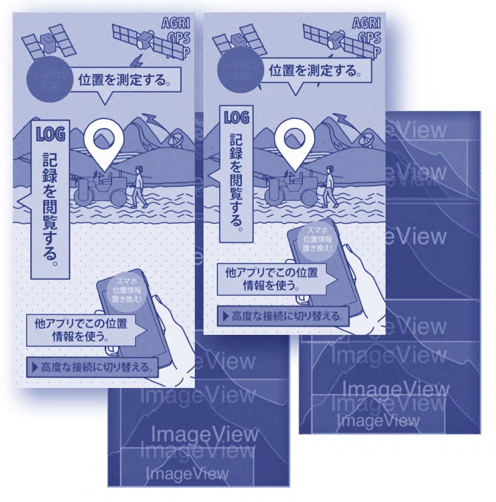
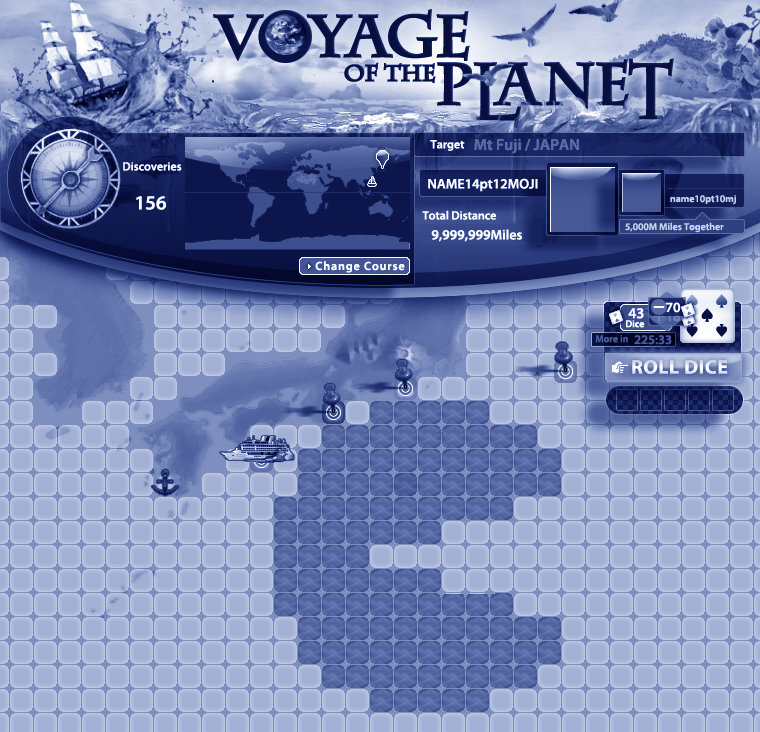

ABOUT ME

渡邊智香子
一目で惹かれるデザインをモットーに、日々センスを磨いている。
島根県 出雲市の、浜山という山や、稲佐の浜（※神代から続く、八百万の神を迎える儀式の場所としてちょっと有名）という海の近くで生まれ、都会と繋がる文明機器・・・TVを見て育ったため、出雲弁という強烈な方言がろくに聞き取れないまま大人になった。
「言葉がわからない」と言うと、祖母はとても悲しそうだった。しかし言葉は通じなくとも、建て付けのせいか 窓に出来ていた隙間にテープを貼ってあげると物凄く喜んでもらえたり（万札を何枚も貰って親に言ったら返しなさいと言われ返した）、そこは祖母への好奇心や愛情が普通にあり、逆に面白いコミュニケーションとなっていた。
本を読むとその世界に入り込めると気がついてから、夢遊病のように本を読み、小学校の図書室は2周目まで行った。 2周目だと気がついたのは2周目に「クオレ」と言う本の背表紙にマジックで線を足して「タオル」と書かれる悪戯を発見したため。 見知らぬ誰かのくだらない悪戯にどうにもこうにも爆笑した。
出雲高校と言う古墳の上にある45度に近いような坂道を上らなければならない高校にギリギリに到着してしまうなど大変な思いをして通っていた。子供の頃から絵、文章などで賞を取る事が多く（多い日には一日３回、壇上に上がったのでかなり受賞していたと思う。目立つのが嫌で断ったりしていたが今となっては何も受賞していないので、惜しい事をした。）、 そのまま美大に行くよう正座で数時間、そこ一択に近い形で勧められため、漫画家のアシスタントになる夢を諦め、高校生の頃に東京の予備校に長期休みの度に通わされた。「どうしてここにいるのかな」と言う雰囲気で通っていた。
アンダーグラウンドな文化に憧れ、大学時代、電子雑音という雑誌のデザインのアルバイトをした。
その編集長のご厚意で、ドイツで個展を開かせて貰った。 ドイツは貴族が出資したりギャラリーでワインを売ったりし収益を上げるので無料でいろんな場所を借りられる。意欲さえあればアートをどれだけでも作り発表出来る根強いバックアップ環境がある。現地のDJ、アーティスト、カーペンターなど色々な地元の人とワイワイ過ごしてあまりの意気投合、桃源郷ぶりに帰りたくなくなり泣いた。
スピード感が自慢で、何でも早く学習し作れるが、疲れるのでその後のコーヒータイムが倍くらいの時間だったりする。
2004 武蔵野美術大学 造形学部 デザイン情報学部卒
2004 ドイツハンブルク ハインターコンチギャラリーにて個展
2004 株式会社セガに入社。
UIデザイン、キャラクターデザイン、グッズデザイン、ローカライズ、ツール開発、デザインシステムなど２dグラフィックを印刷含め全般担当。
世界のクラシックボードゲームで2dグラフィックデザイナー、WCCFにて2dグラフィックチーフを２期担当し、独立。
アプリケーションやWEB、印刷物など、様々な制作をする。
育児が大変すぎて、そこのあたりの記憶が寝不足で曖昧に。しかし往復12kmもある遠方のモンテッソーリ教育の幼稚園に自転車で通い、帰りにみんなで公園に行って遊んだり、 自宅で幼稚園に子供が通っている間だけ、カフェを運営していたのでそこで遊んだりして充実していた。
今、下の子は近所に出来たインターに通っているため、仕事が出来ている。
子供が生まれてから、あれもこれもロボットにやって貰えれば助かる。と思うようになった。 家にIotも取り入れ、生体感知、照度、ドアの開閉がデータになりアレクサから「door open」など声をかけられるように。旅行の際も安心。 一言でテレビやエアコンも操作出来る便利さの虜になり、気まぐれに追加している。
たまにシンギュラリティ大学などの文献検索で、発展や新技術への投資の度合い、さらに今後はどう便利になるかを検索し、ピンチをチャンスに変える新技術に期待している。
踊れる音楽、フードコーディネイト、旅、お茶が好きです。
どうぞよろしくお願いいたします。
一目で惹かれるデザインをモットーに、日々センスを磨いている。
島根県 出雲市の、浜山という山や、稲佐の浜（※神代から続く、八百万の神を迎える儀式の場所としてちょっと有名）という海の近くで生まれ、都会と繋がる文明機器・・・TVを見て育ったため、出雲弁という強烈な方言がろくに聞き取れないまま大人になった。
「言葉がわからない」と言うと、祖母はとても悲しそうだった。しかし言葉は通じなくとも、建て付けのせいか 窓に出来ていた隙間にテープを貼ってあげると物凄く喜んでもらえたり（万札を何枚も貰って親に言ったら返しなさいと言われ返した）、そこは祖母への好奇心や愛情が普通にあり、逆に面白いコミュニケーションとなっていた。
本を読むとその世界に入り込めると気がついてから、夢遊病のように本を読み、小学校の図書室は2周目まで行った。 2周目だと気がついたのは2周目に「クオレ」と言う本の背表紙にマジックで線を足して「タオル」と書かれる悪戯を発見したため。 見知らぬ誰かのくだらない悪戯にどうにもこうにも爆笑した。
出雲高校と言う古墳の上にある45度に近いような坂道を上らなければならない高校にギリギリに到着してしまうなど大変な思いをして通っていた。子供の頃から絵、文章などで賞を取る事が多く（多い日には一日３回、壇上に上がったのでかなり受賞していたと思う。目立つのが嫌で断ったりしていたが今となっては何も受賞していないので、惜しい事をした。）、 そのまま美大に行くよう正座で数時間、そこ一択に近い形で勧められため、漫画家のアシスタントになる夢を諦め、高校生の頃に東京の予備校に長期休みの度に通わされた。「どうしてここにいるのかな」と言う雰囲気で通っていた。
アンダーグラウンドな文化に憧れ、大学時代、電子雑音という雑誌のデザインのアルバイトをした。
その編集長のご厚意で、ドイツで個展を開かせて貰った。 ドイツは貴族が出資したりギャラリーでワインを売ったりし収益を上げるので無料でいろんな場所を借りられる。意欲さえあればアートをどれだけでも作り発表出来る根強いバックアップ環境がある。現地のDJ、アーティスト、カーペンターなど色々な地元の人とワイワイ過ごしてあまりの意気投合、桃源郷ぶりに帰りたくなくなり泣いた。
スピード感が自慢で、何でも早く学習し作れるが、疲れるのでその後のコーヒータイムが倍くらいの時間だったりする。
2004 武蔵野美術大学 造形学部 デザイン情報学部卒
2004 ドイツハンブルク ハインターコンチギャラリーにて個展
2004 株式会社セガに入社。
UIデザイン、キャラクターデザイン、グッズデザイン、ローカライズ、ツール開発、デザインシステムなど２dグラフィックを印刷含め全般担当。
世界のクラシックボードゲームで2dグラフィックデザイナー、WCCFにて2dグラフィックチーフを２期担当し、独立。
アプリケーションやWEB、印刷物など、様々な制作をする。
育児が大変すぎて、そこのあたりの記憶が寝不足で曖昧に。しかし往復12kmもある遠方のモンテッソーリ教育の幼稚園に自転車で通い、帰りにみんなで公園に行って遊んだり、 自宅で幼稚園に子供が通っている間だけ、カフェを運営していたのでそこで遊んだりして充実していた。
今、下の子は近所に出来たインターに通っているため、仕事が出来ている。
子供が生まれてから、あれもこれもロボットにやって貰えれば助かる。と思うようになった。 家にIotも取り入れ、生体感知、照度、ドアの開閉がデータになりアレクサから「door open」など声をかけられるように。旅行の際も安心。 一言でテレビやエアコンも操作出来る便利さの虜になり、気まぐれに追加している。
たまにシンギュラリティ大学などの文献検索で、発展や新技術への投資の度合い、さらに今後はどう便利になるかを検索し、ピンチをチャンスに変える新技術に期待している。
踊れる音楽、フードコーディネイト、旅、お茶が好きです。
どうぞよろしくお願いいたします。
AGRI GPS APP

lighthouse.inc
JAXAなどのGPSシステムを担っているlighthouseさんのiotアプリケーションのUI。
JAXAなどのGPSシステムを担っているlighthouseさんのiotアプリケーションのUI。
VOYAGE OF THE PLANET

BNG（Bandai Namco Games）
Facebookで遊べるコンテンツです。
Facebookで遊べるコンテンツです。
World Club Champions Football

SEGA（hitmaker/AM3）
通称WCCF。カードではなく札束を刷っていると揶揄されるぐらい、レアカードにプレミアがついていた。（一枚２０万円など）累計５億枚のカード発行枚数で、ギネスに登録された。
通称WCCF。カードではなく札束を刷っていると揶揄されるぐらい、レアカードにプレミアがついていた。（一枚２０万円など）累計５億枚のカード発行枚数で、ギネスに登録された。